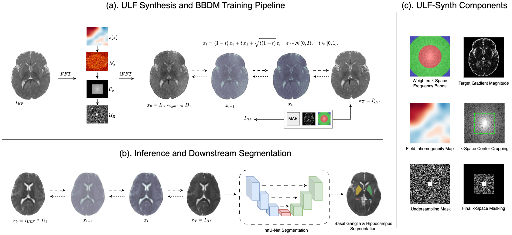

ULF-Synth: Physics-Guided Ultra-Low-Field MRI Enhancement for Pediatric Neuroimaging
Abstract
Ultra-low-field (ULF) MRI enables portable and accessible neuroimaging, but suffers from low signal-to-noise ratio and limited spatial resolution relative to high-field (HF) systems. Acquiring paired ULF–HF data for supervised enhancement is often infeasible, particularly in resource-limited settings. We introduce ULF-Synth, a framework combining: (i) acquisition-based synthesis of realistic ULF images from HF volumes for large-scale paired training, and (ii) a spatial-frequency domain objective that prioritizes recovery of high-frequency anatomical detail. The formulation is architecture-agnostic, consistently improving structural similarity and perceptual fidelity across encoder-decoder, adversarial, and diffusion-based translation models. Trained exclusively on synthetic data, our models generalize to real 64 mT ULF acquisitions, improving multiclass brain segmentation and achieving higher radiologist preference and diagnostic acceptability in a blinded reader study.
Method

The ULF synthesis module models the key physical phenomena distinguishing ULF from HF acquisitions:
Signal scaling
(BULF/BHF)2 polarization ratio
T2* decay & B0 inhomogeneity
Spatially-varying exponential decay from random B0 field maps
Thermal noise
Gaussian noise scaled to SNR 15–50
k-space cropping
Reduced resolution (45–55%)
k-space undersampling
Accelerated acquisition (2×–3×) with center-out sampling
B0 off-resonance distortion
Phase distortion from random B0 field maps
Results

Usage
Installation
# Clone and install
git clone https://github.com/toufiqmusah/ULF-Synth.git
cd ULF-Synth
pip install -r requirements.txt
CLI
# Single volume python simulate_ulf.py input.nii.gz output.nii.gz # Folder of NIfTI files python simulate_ulf.py /path/to/hf/scans/ /path/to/ulf/scans/ # Reproducible seed python simulate_ulf.py input.nii.gz output.nii.gz --seed 42
Python API
from simulate_ulf import simulate_ulf ulf_volume, affine, header, params = simulate_ulf("input.nii.gz") ulf_volume, affine, header, params = simulate_ulf("input.nii.gz", seed=42)